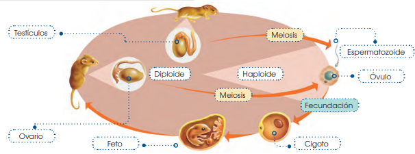
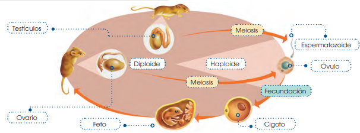

Descripción de actividad:
Identificar el nombre del ciclo biológico que se presenta en la siguientes imagen.

Identificar el nombre del ciclo biológico que se presenta en la siguientes imagen.

Obra publicada con Licencia Creative Commons Reconocimiento Compartir igual 4.0